Una historia que nació en 2018… ❤️y sigue escribiéndose.
Capítulo 1
Donde todo comenzó
✨ Todo empezo en agosto, en el momento en que nos presentaron ese dia debo de confesar
que me enamore de tu carisma, aunque si por estar siempre con tu amigo de ese tiempo
pensaba que eras ya sabes 😂, desde ese dia quede flechada con tu mirada, esas hermosas pestañas que tienes,
esos ojos color cafes oscuros, ese cabello entre ondulado, sin imaginarme que ese dia marcaria mi vida,
porque ese
conoci al amor de mi vida (osea tu precioso), mantuvimos amistad durante un mes, durante ese tiempo
me todo la dicha de estar en tu primer cumpleaños aunque siendo amigos pero nunca olvidare que cuando supe
que seria tu cumpleaños ese dia compre esa espuma jaja confieso que te estaba espiando para ver cuando
pasaras por ese pasillo donde
te felcicite y cuando vi que ibas a pasar sali corriendo porque queria felicitarte pero hacerte al mismo
tiempo esa travesura,
en ese tiempo no teniamos mucha comunicacion ya que, yo no tenia un telefono y solo en las noches me
conectaba a mi facebook
recuerdo que el 20 de septiembre del 2018 me mandaste un msj en messenger diciendo que si queria ser tu
novia y yo
te dije que queria que me lo pidieras en persona, al siguiente dia llegaste acompañado de tu amigo a darme
un corazon de papel, pero
tenias mucho nervios eso si no lo olvido porque tu carita bien nerviosa y tu dudoso en darlo y lo metiste en
mi
mochila, entre corriendo a mi salon cuando lei lo que decia: "¿Quieres ser mi novia?" enserio que no evite
andar a las risas mega feliz y enamorada de ver ese corazon, tu me preguntaste por msj
entonces que dices? y yo te dije para hacerla de emocion que lo diria a la salida que nos miraranos en el
pasillo de siempre
en cuanto sali fui corriendo alcanzarte y abrazandote te dije si quiero yo mega emocionada, asi fue como
empezo
nuestra historia de amor en aquel dia el 21 de septiembre del 2018 lleno de nervios pero siendo los mas
felices,
TE AMOOOOOOOOO MI NIÑO HERMOSO❤️😍 y aunque aquel primer día terminó con risas y nervios, nuestro viaje
apenas comenzaba…
Lo que vendría después cambiaría nuestras vidas para siempre.
✨
Capítulo 2
✨ Después de aquel primer día tan especial, nuestros momentos juntos empezaron a llenarse de risas y detalles
que jamás olvidaré.
En diciembre del 2018 disfrutamos de la posada de la escuela, aunque ni Navidad ni Año Nuevo pudimos
celebrarlo a lo grande porque mi mamá aún no sabía de nuestro noviazgo.
Al llegar 2019, comenzamos a celebrar fechas especiales juntos. Recuerdo San Valentín con nuestras playeras
de cochinitos,
y cómo me regalaste ese pequeño corazón que se abría y tenía nuestras fotos; la pasamos genial en la
escuela, entre risas y miradas cómplices.
Mi primer cumpleaños juntos, el 27 de junio, fue inolvidable: viniste a mi casa y tuve un pastel de
puerquito,
porque desde San Valentín había empezado a amar los cochinitos, ¡y lo nuestro era pura ternura! Y claro,
cuando llegó tu cumpleaños, me aseguré de
hacerte una sorpresa en la escuela con globos que decían “Feliz cumpleaños”, para verte sonreír como solo tú
sabes. ✨
Continuará…
🎮 Atrapa los corazones amor
Recuerdos: 0 / 10
Capítulo 3
Amar en tiempos difíciles
✨ Como toda historia real, la nuestra no fue perfecta. También llegaron las primeras discusiones, los
momentos duros y las pruebas que dolían más de lo que imaginábamos.
Hubo un tiempo en el que mi mamá no aceptaba nuestra relación y tuvimos que vivir nuestro amor a escondidas,
cuidando cada mensaje, cada encuentro, cada mirada, como si amar fuera un secreto prohibido.
Yo también cargaba mis propios miedos. Los celos, las dudas, ese nudo en el pecho al verte en ciertas
situaciones y pensar que, por no vivir en el mismo lugar, alguien más podría ocupar mi lugar.
Vivíamos a media hora de distancia, pero esa distancia a veces se sentía como un mundo entero, sobre todo
porque llegar hasta donde yo vivía siempre fue complicado; los taxis, los tiempos, todo parecía ponerse en
contra.
Y entonces llegó la pandemia… y con ella, una prueba aún más difícil. Pasamos casi un año sin vernos. Un año
entero de llamadas, mensajes, desvelos y lágrimas silenciosas.
Hubo una vez que logramos vernos, aunque fuera a escondidas, y ese momento, tan breve y tan intenso, me
recordó que valía la pena resistir.
Todo era complicado, todo parecía empujarnos a rendirnos… pero nunca lo hicimos. Porque, a pesar de todo,
jamás dejé de amarte.
Al contrario, mi amor creció, se hizo más fuerte, más profundo, más real. Y entendí que cuando el amor es
verdadero, ni la distancia, ni el miedo, ni el mundo entero pueden apagarlo. ✨
Capítulo 4
Volver a encontrarnos
✨ Después de más de dos años separados, la vida volvió a cruzar nuestros caminos. No fue como al principio,
ya no había nervios adolescentes ni promesas impulsivas, había recuerdos, heridas sanando y muchas preguntas
sin decir.
Volvimos siendo personas distintas, con más experiencias, más miedos… pero también con un amor que,
sorprendentemente, nunca se había ido del todo.
El reencuentro no fue inmediato ni perfecto. Tuvimos que aprender a conocernos otra vez, a hablarnos con
cuidado, a escuchar sin juzgar.
Cada conversación era un paso, cada gesto una prueba de que esta vez queríamos hacerlo mejor.
Ya no se trataba solo de sentir, sino de entender, de respetar y de elegir conscientemente quedarnos.
Descubrimos que el tiempo no nos había separado, nos había preparado.
Que todo lo vivido antes nos había enseñado lo que no queríamos repetir y lo que sí estábamos dispuestos a
cuidar. Volver no fue retroceder,
fue comenzar desde un lugar más maduro, más sincero y más fuerte.
Y así, sin prisas pero con el corazón firme, nos dimos cuenta de algo hermoso: que aun después de tanto
tiempo,
el amor seguía ahí, esperando el momento correcto para florecer otra vez. ✨
Capítulo 5
Elegirnos todos los días
✨ Después de volver a encontrarnos, entendimos que el amor no era solo un sentimiento mágico, sino también
una decisión diaria.
Cada mensaje, cada abrazo, cada “buenos días” era una forma de decirnos: “te elijo”, y eso nos hacía sentir
más cerca que nunca.
Aprendimos a celebrar lo cotidiano, cada día nos demostraba que amar también es cuidar, respetar los
espacios del otro y ser sinceros en todo momento.
Descubrimos que las discusiones ya no eran para lastimarnos, sino para crecer juntos y fortalecer nuestra
historia.
Elegirnos no siempre fue fácil, pero cada decisión nos recordaba que este amor era diferente: consciente,
fuerte y nuestro. ✨
Capítulo 6
Un amor que sigue escribiéndose
✨Llegar a este capítulo de nuestra historia me hace sentir que cada instante vivido valió la pena.
Después de tantos años, de risas, lágrimas, dificultades y reencuentros, hemos aprendido que el amor
verdadero no es solo un sentimiento pasajero,
sino un compromiso silencioso que se fortalece con cada mirada, cada palabra y cada gesto.
Aunque la distancia siempre fue un desafío, nunca dejamos que se interpusiera entre nosotros.
Cada llamada, cada mensaje, cada video compartido, fueron puentes que nos mantuvieron cerca, aun cuando
estábamos a media hora de distancia
y la vida parecía jugar en nuestra contra con taxis complicados y horarios difíciles.
Aprendimos a amarnos incluso sin poder abrazarnos todos los días, y a encontrar la felicidad en los pequeños
momentos que podíamos compartir.
Recuerdo aquel momento tan especial, cuando me diste aquel anillo de promesa. Fue un símbolo de tu cariño y
dedicación,
y aunque en ese momento no estábamos oficialmente juntos, tus ojos y tu corazón me hicieron sentir que ya
había un pacto entre nosotros:
un juramento de que siempre nos cuidaríamos y nos elegiríamos, pase lo que pase. Ese detalle, tan pequeño y
a la vez tan gigante,
siempre estará grabado en mi memoria como uno de los momentos más puros y tiernos de nuestra historia.
Cada día juntos ha sido un aprendizaje: descubrir que amar también es esperar, apoyar los sueños del otro y
celebrar los logros compartidos.
Hemos aprendido que los errores no nos separan, sino que nos enseñan a ser más pacientes y más comprensivos.
Que los silencios no duelen cuando se llenan de confianza y de respeto.
Y hoy, mientras miro hacia atrás y veo todo lo que hemos vivido, siento que este amor sigue creciendo,
como si cada recuerdo y cada detalle fueran ladrillos que construyen nuestro propio universo. Los momentos
felices, los retos, las travesuras,
las sorpresas, los abrazos en la oscuridad y las risas interminables, todos se mezclan para formar la
historia más hermosa que jamás podría imaginar.
✨ Aunque el tiempo pase, aunque la distancia insista en separarnos y las circunstancias cambien, sé que
nuestro amor seguirá escribiéndose.
Porque cada día que despertamos, cada “te amo” dicho con el corazón, es una nueva línea en nuestra historia,
y yo no cambiaría ni un solo capítulo,
ni un solo instante, porque todo nos ha llevado hasta aquí… y hasta donde queramos llegar, siempre de la
mano.🥹❤️ ✨💖
📸 Nuestro Álbum
Recuerdos especiales que guardamos juntos, toca cada foto mi amor💖
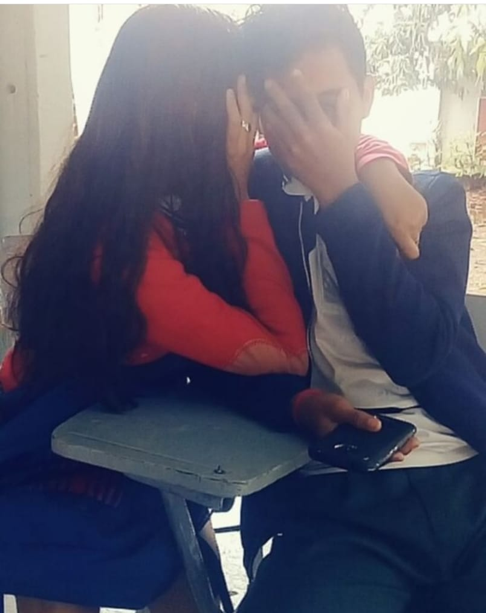
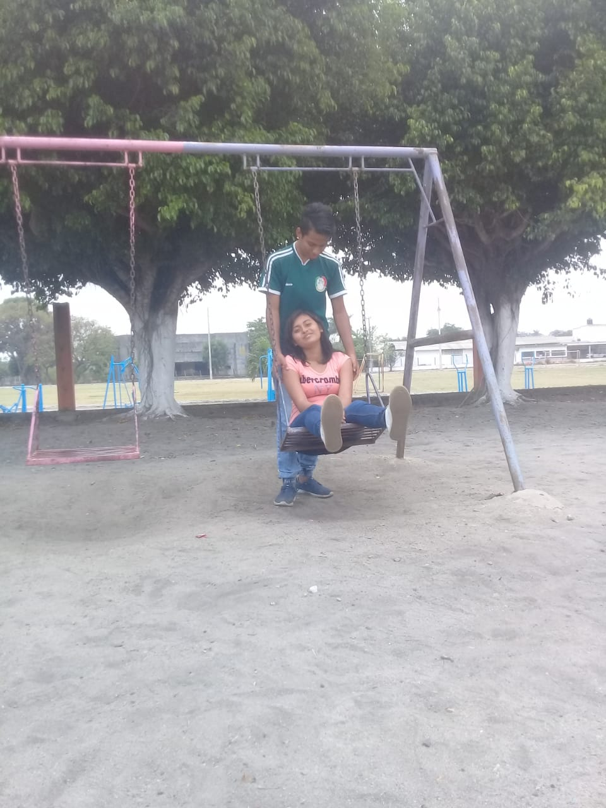
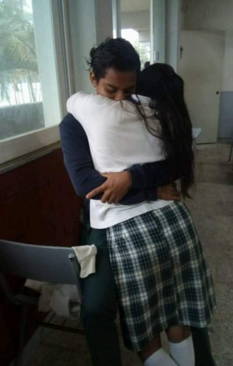
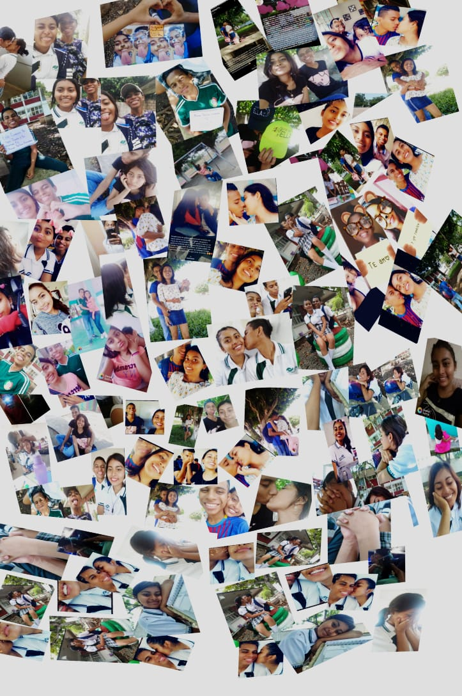
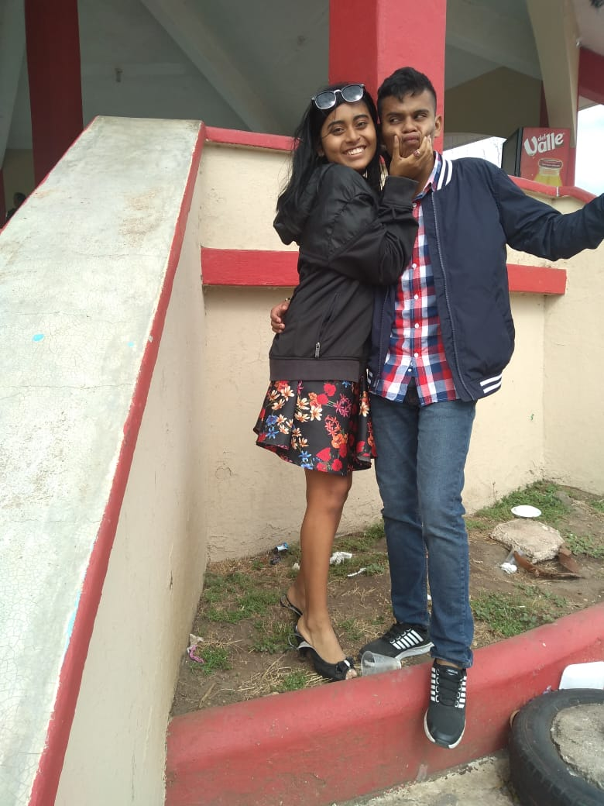
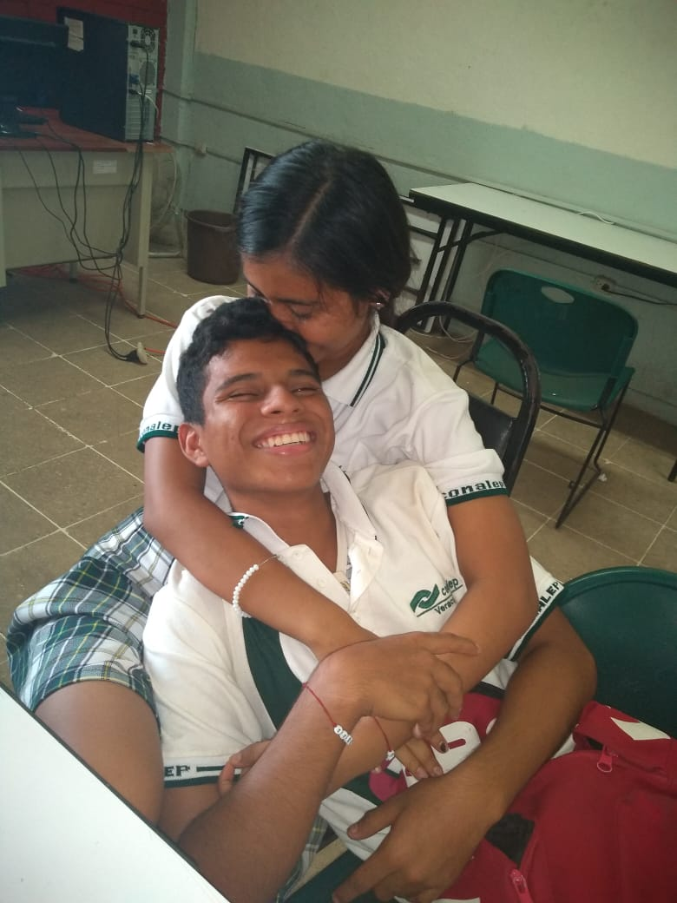
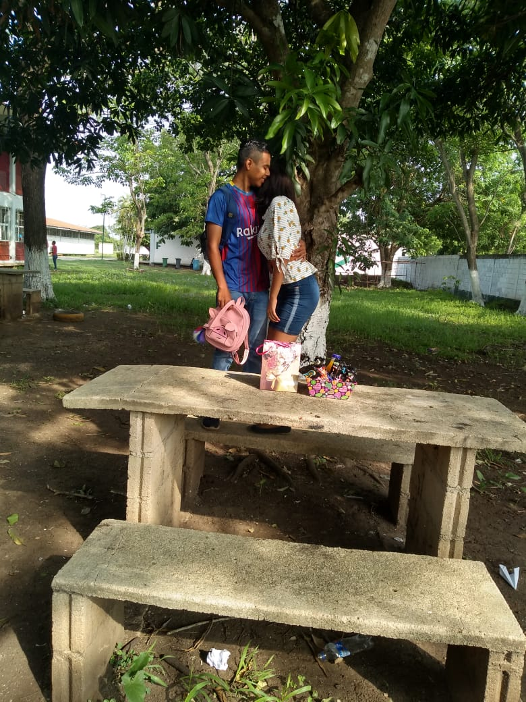
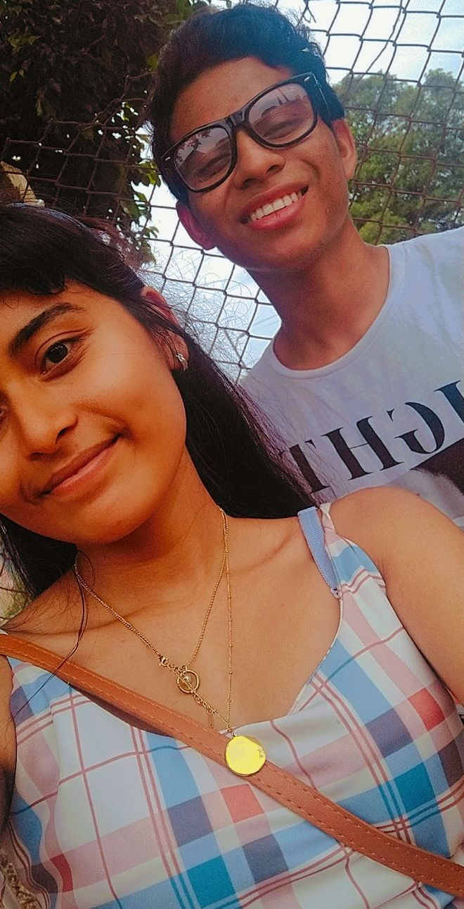
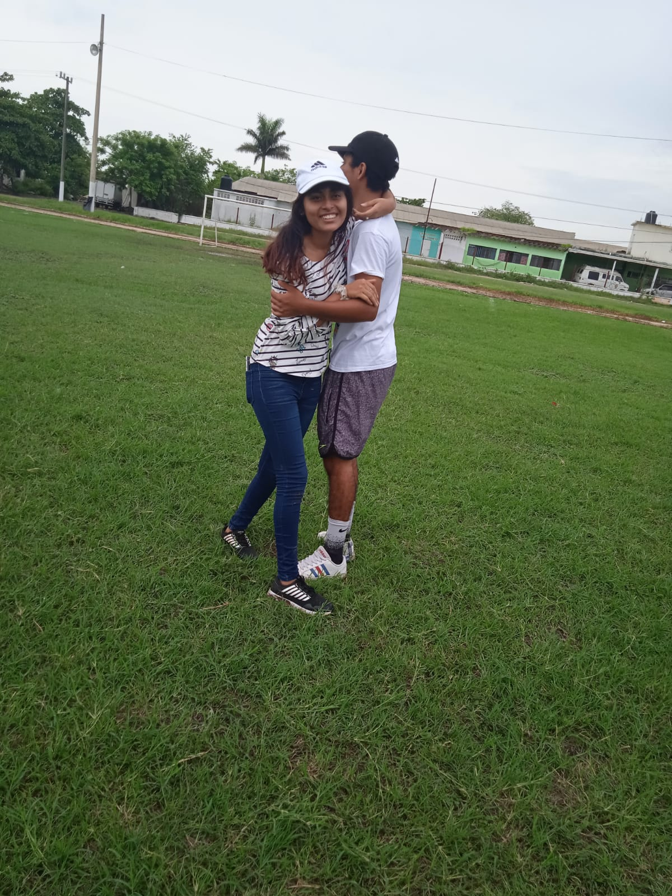
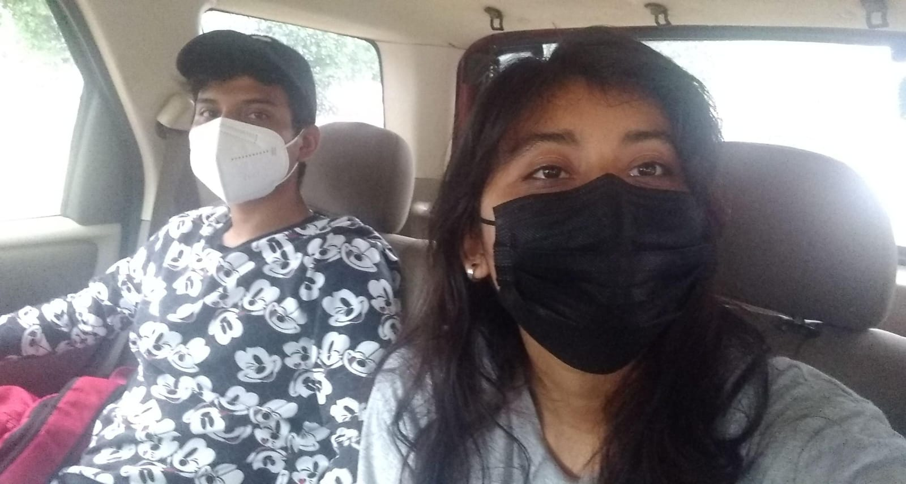
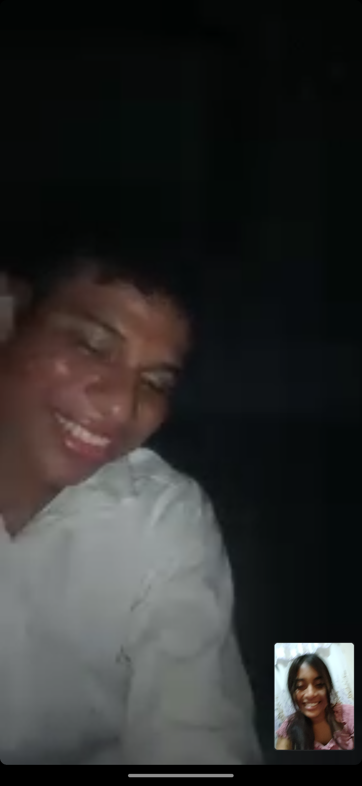
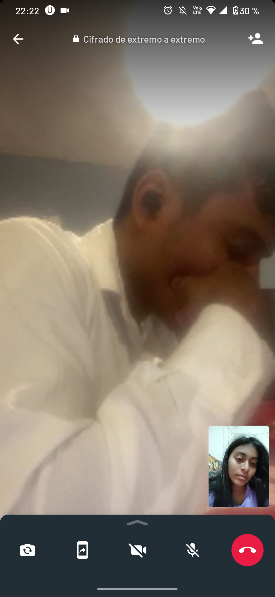
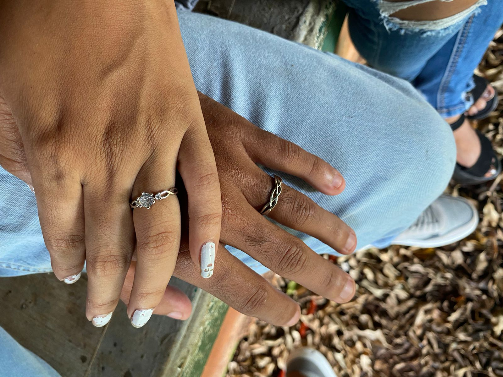
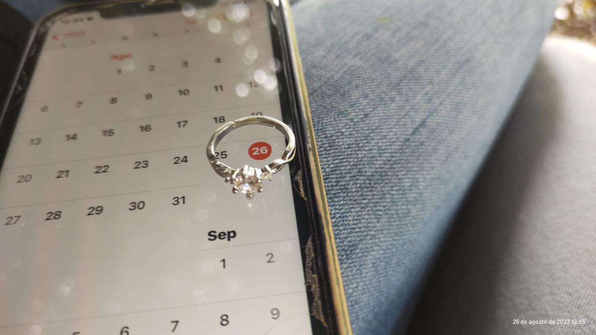
×
Canciones que te dedico amor de mi vida
Disfruta de estas canciones mi vida
Te amo amor mio❤️🔥
Feliz San Valentin al ser mas hermoso, tierno y especial que existe.
Gracias por ser mi razon, mi alegria y el hogar.
Te amo hoy, mañana y siempre🤭❤️